Fernly round 1, step 1 frames (lock v1.2) Round score 74, usable, fix the listed issues. Best set: S02-2 + S03-2 + S04-3 + A2-1. Green border: the best set. Scores are advice; the art director picks.
S02 · Puddle on the soil 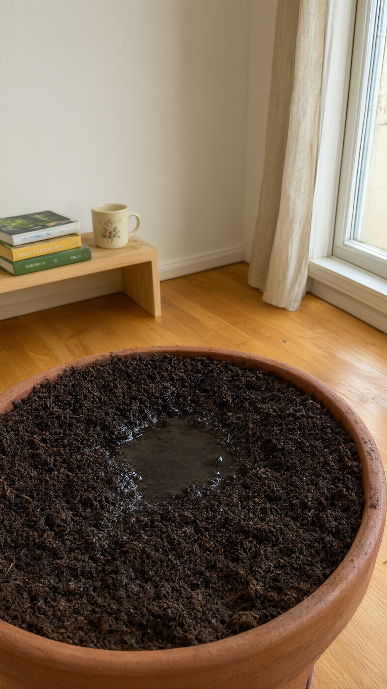
S02-2 73 qwenBiggest, clearest puddle in the centre; a drop will land well. Faint cover text on one book 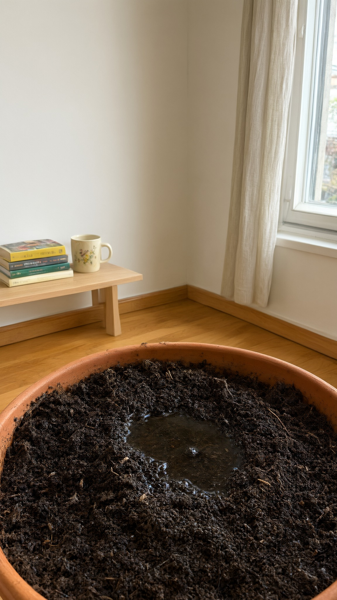
S02-1 70 qwenPuddle reads; pot rim looks like a shallow bowl; room sharp, not out of focus 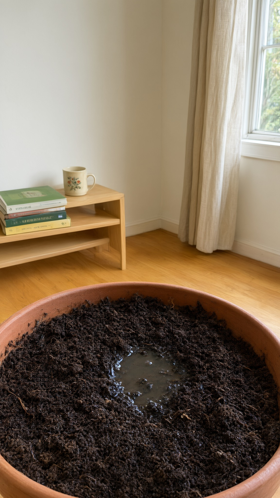
S02-3 65 qwenGlossy puddle, but readable lettering on the book covers 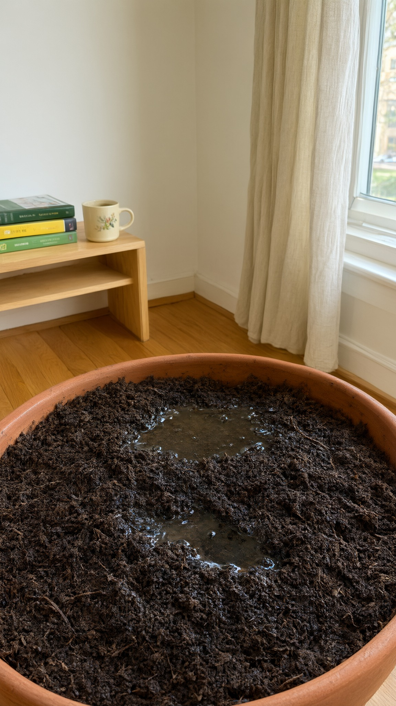
S02-4 63 qwenPot fills two thirds, two puddles split the eye; book lettering S03 · Moved into full sun 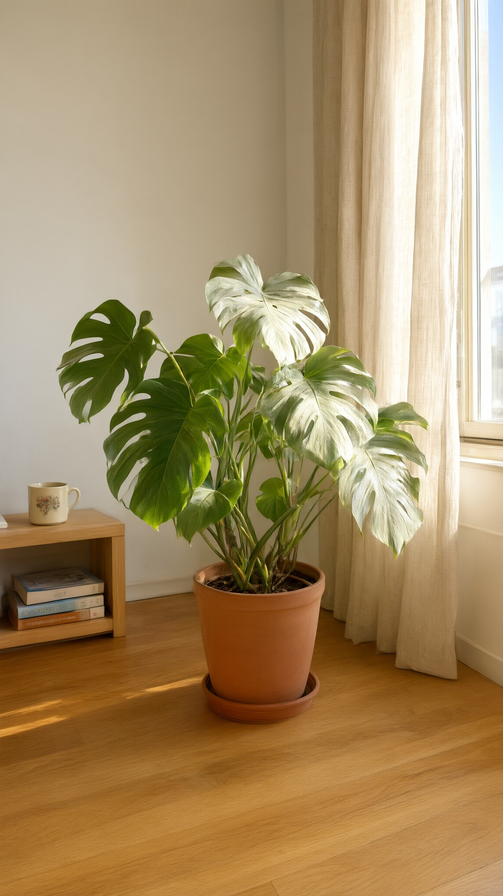
S03-2 73 qwenSun streaks on the floor, several bleached leaves: reads 'too much sun'. Eye level, not low 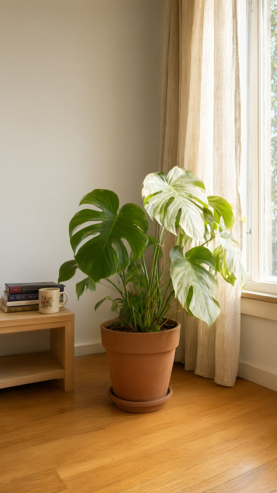
S03-3 72 qwenOne big bleached leaf, clean; less sun on the floor than S03-2 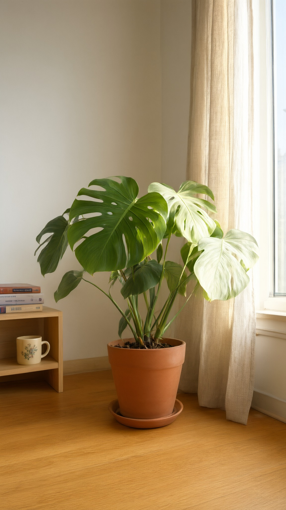
S03-1 68 qwenSoft window light, one pale leaf: reads 'sunny', not 'scorched' 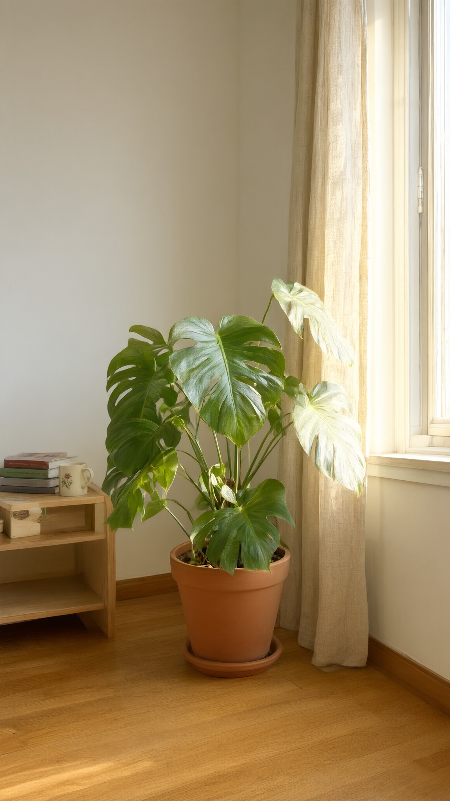
S03-4 64 qwenPlant shape looks thin and odd; light soft S04 · Phone on the shelf 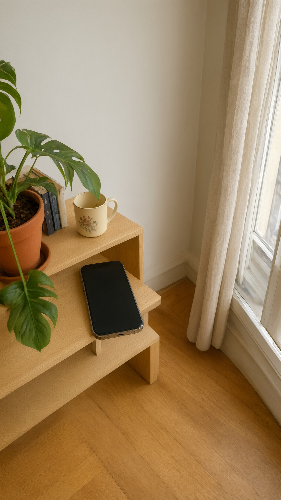
S04-3 71 qwenMedium phone on the shelf, a leaf hanging in, floral mug; screen angled, needs a perspective warp for the UI 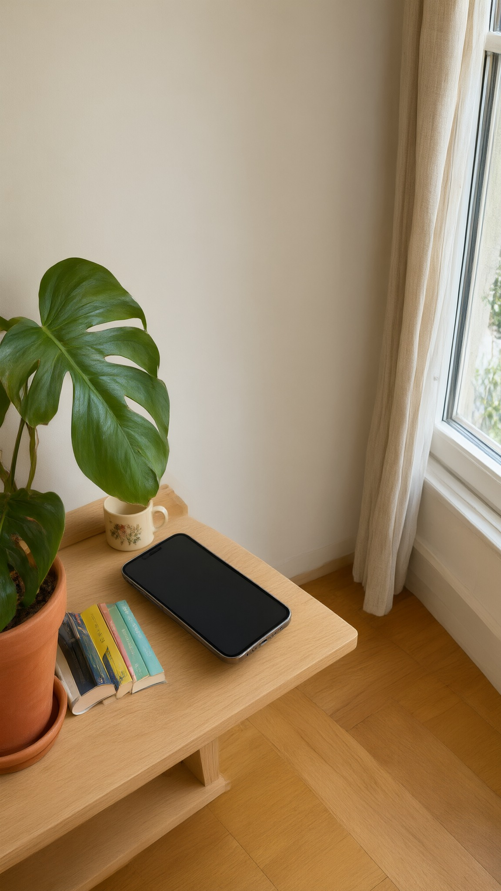
S04-4 67 qwenPhone near the shelf edge, pot cut on the left; screen angled 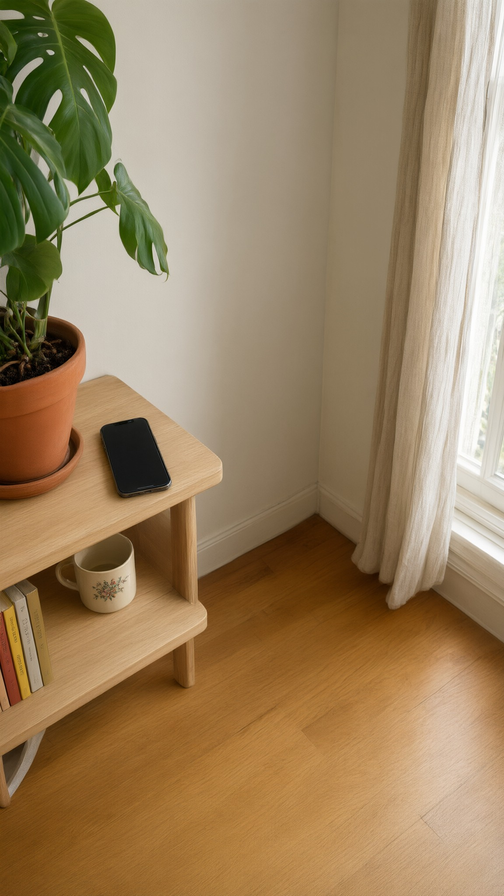
S04-1 60 qwenPhone too small to carry the app screen; lots of empty floor 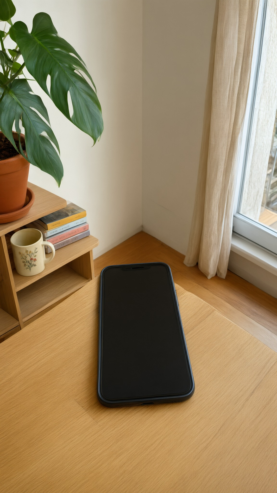
S04-2 58 qwenPhone is giant and lies on the floor: scale error A2 · Static: the can, too close 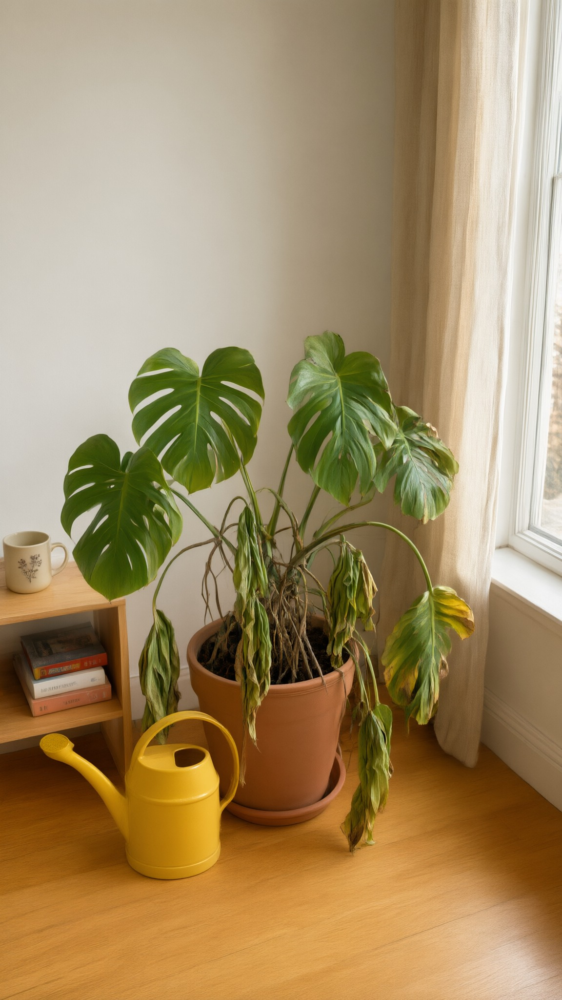
A2-1 79 qwenRoom identical to D1; the can right against the pot: the joke reads at once. Top band empty 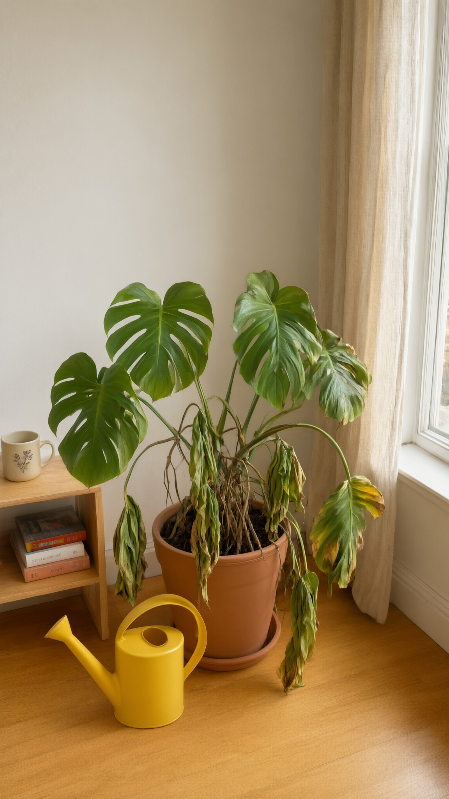
A2-2 76 qwenSame room; the can a little further away, less pointed